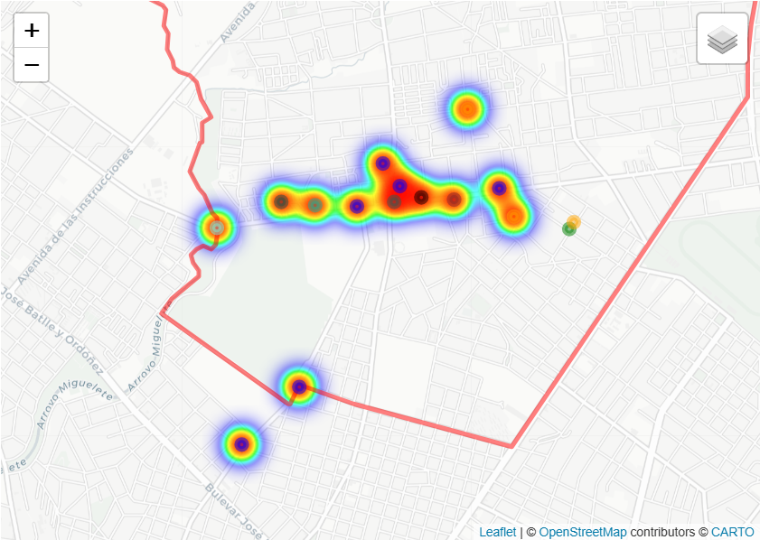

Artículos académicos y materiales de divulgación.
Plácido Ellauri, Ellauri y Marconi (1952–2025). Una larga historia de segregación.
Semanario Brecha, 24 de enero del 2025.
Afrodescendencia en Uruguay. A 50 años del golpe de Estado en Uruguay. Memoria y cuentas pendientes.
Hemisferio Izquierdo, 18 de octubre 2023.
Cantegriles, política y vivienda, a 50 años del golpe de Estado. Memorias urbanas fracturadas.
Especial del Semanario Brecha a 50 años del golpe de Estado, 23 de junio del 2023.
Memoria afrodescendiente, dictadura, derechos humanos y ciudad.
Trama al Sur, Montevideo, 2021.
El fenómeno de los "cantegriles" montevideanos a través de la memoria: discriminación y estigmatización.
Hemisferio Izquierdo, 2017.

Acceder al mapa →Mapa histórico web de Casavalle
Mapa histórico interactivo de Casavalle del período de 1950 a 1990, una herramienta que combina memoria, historia y tecnología para acercar la evolución de este territorio de Montevideo. El proyecto reúne información cartográfica, histórica y documental, con el objetivo de ofrecer una mirada accesible y dinámica sobre la historia urbana de Casavalle en la segunda mitad del siglo XX.
Cómo funciona el mapa: la plataforma ofrece tres mapas interactivos, accesibles mediante pestañas: Primeros pobladores de la zona suburbana de Casavalle a mediados del siglo XX, Lugares y memorias 1, y Lugares y memorias 2. Al cliquear en los puntos de colores sobre el Google Map se ubican los lugares descriptos e historiados, con sus referencias básicas y fotografías históricas.
Memorias urbanas desde las periferias
Observatorio de Asentamientos, Intendencia de Montevideo
En el marco de un producto de difusión llevado adelante por el Observatorio de Asentamientos de la Intendencia de Montevideo he realizado un proyecto de investigación histórica titulado “Memorias urbanas desde las periferias”. El mismo busca suministrar información elaborada desde la historiografía y la memoria histórica de las formas de habitar la ciudad que desarrollaron a lo largo del siglo XX y XXI los sectores pobres montevideanos -trabajadores de bajos ingresos y/o informales, desempleados, jornaleros-, las organizaciones sociales que se dieron y sus luchas por vivienda y ciudad. Diciembre 2025.

Movimientos afrolatinoamericanos en el camino a Durban (1999–2001). Proceso de la Conferencia Ciudadana (Chile, 2000) y la III Conferencia Mundial contra el Racismo (Durban, 2001)
Bolaña, María José
Mides-Uruguay
El libro reconstruye el proceso latinoamericano y caribeño de participación y movilización social hacia la Conferencia Mundial contra el Racismo realizada en Durban en el año 2001. A través de la memoria de algunos y algunas de sus participantes claves, provenientes de diversos países —Brasil, Venezuela, Honduras, Costa Rica, Perú, Uruguay— y, a partir de documentos escritos, el trabajo presenta un proceso histórico que forma parte del pasado reciente de los movimientos afrolatinoamericanos y caribeños en su lucha contra el racismo a nivel local y global.